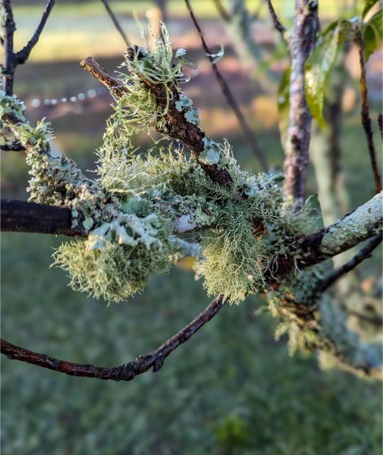
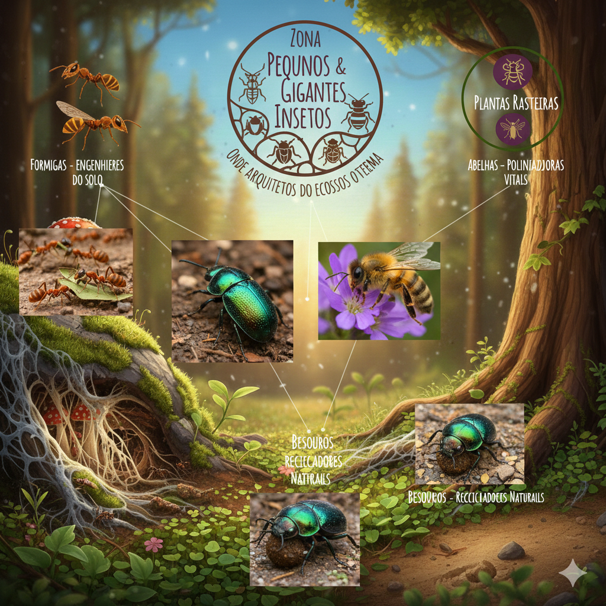
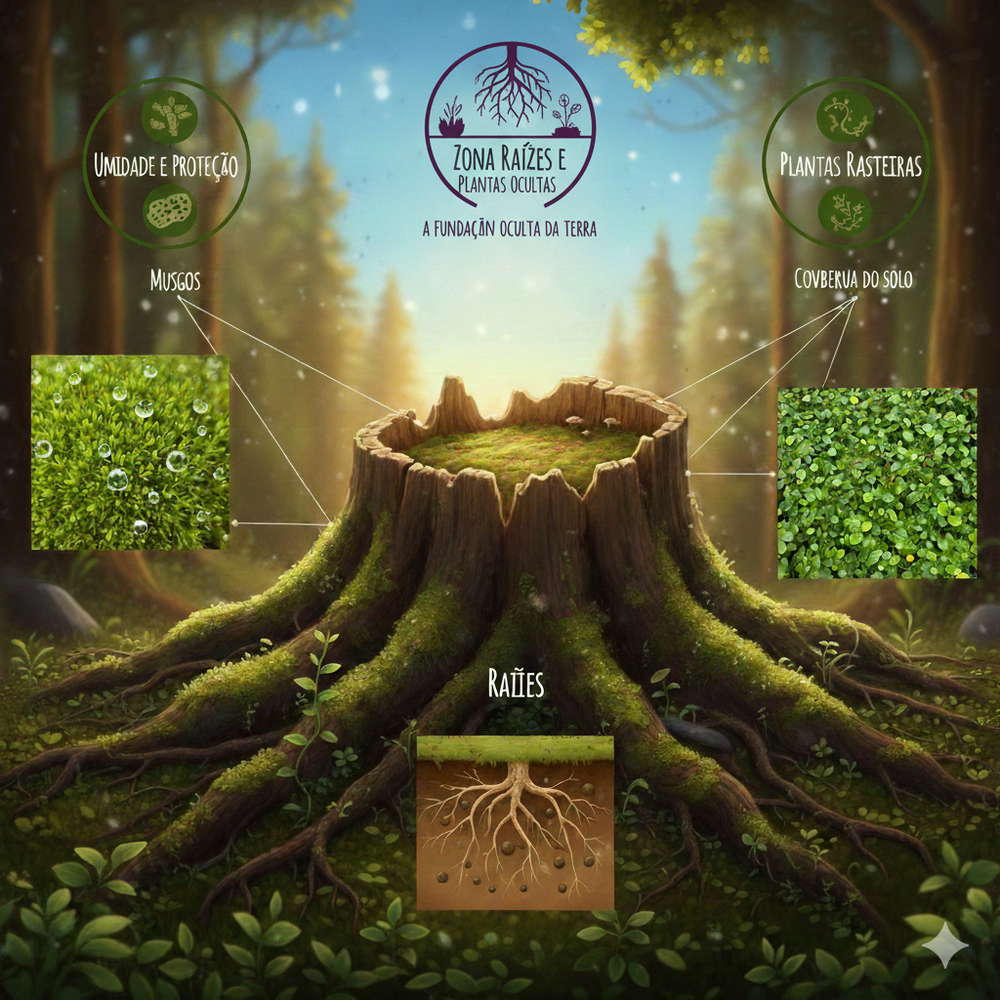

Atlas Vivo Bio Invisível
O Olhar para o Invisível
Muitas vezes, nossa definição de natureza limita-se ao que é grande, colorido ou majestoso. Mas a verdadeira força da vida reside no que é ignorado. Este site nasceu para dar voz aos pequenos arquitetos, aos químicos microscópicos e às redes ocultas que sustentam a biodiversidade.
Nossa missão é mostrar que não existe "ser pequeno demais" na ecologia. De uma bactéria no solo ao musgo em uma rocha, cada elemento descrito aqui é uma peça fundamental de um quebra-cabeça que mantém o planeta vivo. Explorar a Biodiversidade Invisível é aprender que a maior parte da magia da Terra acontece longe dos nossos olhos, mas bem debaixo dos nossos pés.
Explorar a Biodiversidade Invisível é aprender que a maior parte da magia da Terra acontece longe dos nossos olhos.

Atlas Vivo Bio Invisível
Zona Microvida
Bactérias
Rhizobium: Vivem nas raízes de plantas e "fabricam" adubo natural.
Cyanobacteria: As "algas azuis" que inventaram a fotossíntese e nos dão oxigênio.
Bacillus subtilis: Protege as plantas de doenças e vive no solo.
Microorganismos de solo
Nematódeos: Vermes microscópicos que controlam pragas no solo.
Protozoários (Amebas): Comem bactérias e liberam nitrogênio para as plantas.
Tardígrados (Ursos d'água): Os seres mais resistentes da Terra, essenciais para a saúde de micro-habitats úmidos.
Microrganismos da água
Diatomáceas: Microalgas com carapaças de vidro que produzem 20% do oxigênio do mundo.
Rotíferos: Pequenos "aspiradores" que limpam a água comendo detritos.
Dinoflagelados: Base da alimentação de corais e peixes pequenos.
Nesta zona, exploramos os motores invisíveis dos ecossistemas. Sem eles, a vida como a conhecemos pararia em poucos dias.

Atlas Vivo Bio Invisível
Zona Fúngica
Os fungos
Armillaria ostoyae: O maior organismo do mundo (uma rede gigante sob a terra).
Micorrizas: Fungos que se abraçam às raízes das árvores para trocar açúcar por fósforo.
Trichoderma: Um fungo que protege outras plantas contra fungos "ruins".
Os Cogumelos
Orelha-de-pau (Trametes versicolor): Decompõe troncos caídos, limpando a floresta.
Amanita muscaria: O famoso cogumelo vermelho, vital para a saúde dos pinheiros.
Lactarius indigo: Um cogumelo azul que ajuda no crescimento de florestas tropicais.
Os Bolores
Penicillium: Além da medicina, decompõe frutas e recicla açúcares na natureza.
Rhizopus stolonifer: O bolor do pão, mestre em transformar carboidratos em terra fértil.
Aspergillus: Essencial para a decomposição de matéria vegetal complexa.
A rede de comunicação da Terra. Os fungos não são plantas nem animais; eles formam um reino próprio que conecta a vida.

Atlas Vivo Bio Invisível
As formingas
Formiga-cortadeira (Atta): As maiores agricultoras do mundo (cultivam seus próprios fungos).
Formiga-tecelã: Constrói ninhos unindo folhas, criando abrigo para outros seres.
Formiga-argentina: Vital para dispersar sementes de plantas nativas.
As Abelhas
Abelha-comum (Apis mellifera): A polinizadora global de alimentos humanos.
Mamangaba (Bombus): Polinizadoras de "vibração", essenciais para tomates e batatas.
Abelha-sem-ferrão (Jataí): Crucial para a polinização de árvores nativas em florestas tropicais.
Os Besouros
Rola-bosta (Scarabaeinae): Saneamento básico da natureza, reciclando excrementos.
Joaninha: Uma predadora feroz que protege as plantas de pulgões.
Besouro-serra-pau: Abre caminho em madeira morta para que fungos e bactérias entrem.
A rede de comunicação da Terra. Os fungos não são plantas nem animais; eles formam um reino próprio que conecta a vida.

Atlas Vivo Bio Invisível
Zona Raizes e plantas ocultas
Os Musgos
Sphagnum: O musgo das turfeiras, que armazena quantidades gigantes de carbono.
Musgo-tapete: Cria uma camada de proteção térmica para o solo da floresta.
Musgo-de-fogo: Uma das primeiras plantas a crescer após um incêndio, recuperando o solo.
As Plantas rasteiras
Trevo-branco: Captura nitrogênio do ar e fertiliza o gramado ao redor.
Beldroega: Planta resistente que protege o solo da erosão pelo vento.
Hera-terrestre: Cria um tapete denso que impede a evaporação da água do solo.
Os Raízes
Raízes de Gramíneas: Criam uma malha fina que segura a terra contra enchentes.
Raízes de Árvores de Mangue: Filtram o sal e protegem a costa de tempestades.
Raízes de Leguminosas: Possuem pequenos "nódulos" onde moram as bactérias amigas.
A fundação sob nossos pés. O que vemos acima do solo é apenas metade da história.
